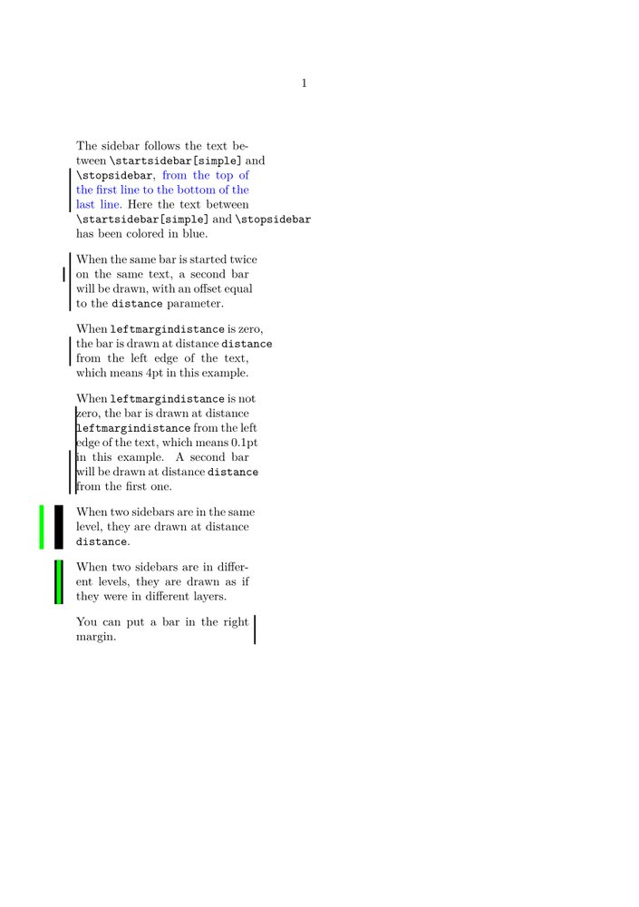
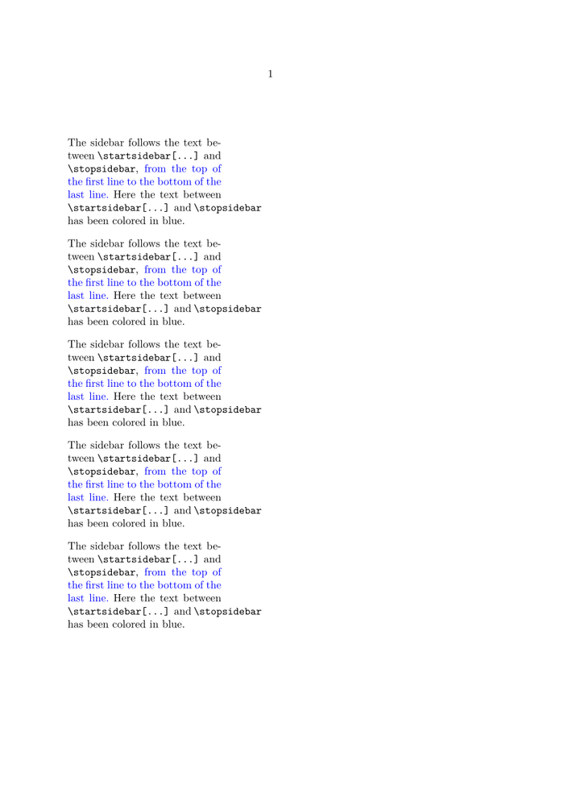
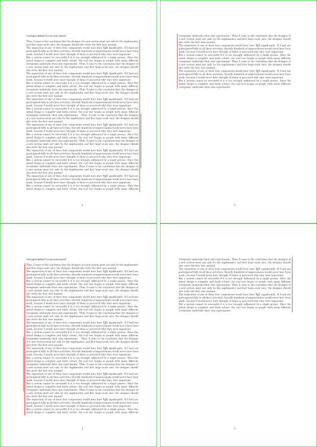

Contents
Summary
The command \setupsidebar is used to customize vertical bars that are used to "vertically underline" portions of text.
Settings
| \setupsidebar[...,...][...=...,...] | |
| [...,...] | name |
| rulethickness | dimension |
| rulecolor | color |
| alternative | number |
| topoffset | dimension |
| bottomoffset | dimension |
| distance | dimension |
| leftmargindistance | dimension |
| level | number |
| Option | Explanation | ||||
|---|---|---|---|---|---|
| rulethickness |
|
||||
| rulecolor |
|
||||
| alternative |
|
||||
| topoffset |
|
||||
| bottomoffset |
|
||||
| distance |
|
||||
| leftmargindistance |
|
||||
| level |
|
||||
Description
\setupsidebar customizes the appearance of vertical bars drawn along the portions of text between \startsidebar[...] and \stopsidebar.
\startsidebar[...] ... \stopsidebar can be placed inside the text of a paragraph to "vertically underline"
portions of text.
They are drawn from the top of the first line to the bottom of the last line of the text between the two commands.
You can fine-tune the starting and ending points of a bar with topoffset and bottomoffset.
\startsidebar[...] ... \stopsidebar can be nested: in this case the distance parameter is used to move the second bar (the inner one) relatively to the first one. The first one is drawn at distance distance from the left edge of the text, each of the next ones will be drawn at distance distance from the previous one.
In case you specify a non zero length for the leftmargindistance parameter, you can discriminate the distance from the text (leftmargindistance) from the distance between bars (distance).
The level parameter lets you define sidebars on different layers. The bars with higher values of level are drawn on top.
From LMTX 2021-10-28, you can use the location parameter: it defaults to left, but it can be right, inner or outer.
right draws the sidebar on the right. inner and outer are used with \setuppagenumbering[alternative=doublesided], to get bars that are always in the inner or in the outer margin.
Examples
Example 1
-
\definesidebar[simple][rulethickness=1pt,distance=4pt] \starttext \hsize=4cm The sidebar follows the text between \type{\startsidebar[simple]} and \type{\stopsidebar}, \startsidebar[simple] {\blue from the top of the first line to the bottom of the last line.}\stopsidebar Here the text between \type{\startsidebar[simple]} and \type{\stopsidebar} has been colored in blue. \blank When the \startsidebar[simple] same bar is started twice on the same text, \startsidebar[simple] a second bar \stopsidebar will be drawn, with an offset equal to the \type{distance} parameter.\stopsidebar \blank \setupsidebar[simple][leftmargindistance=0pt,distance=4pt] When \type{leftmargindistance} is zero, \startsidebar[simple] the bar is drawn at distance \type{distance} from the left edge of the text,\stopsidebar which means 4pt in this example. \blank \setupsidebar[simple][leftmargindistance=0.1pt,distance=4pt] When \type{leftmargindistance} is not zero, \startsidebar[simple] the bar is drawn at distance \type{leftmargindistance} from the left edge of the text, which means 0.1pt in this example. \startsidebar[simple] A second bar will be drawn at distance \type{distance} from the first one.\stopsidebar\stopsidebar \blank \setupsidebar[simple][leftmargindistance=0pt,distance=4mm,rulethickness=2mm,level=1] \definesidebar[over][distance=4mm,rulethickness=1mm,rulecolor=green,level=1] When \startsidebar[simple]\startsidebar[over] two sidebars are in the same level, they are drawn at distance \type{distance}.\stopsidebar\stopsidebar \blank \setupsidebar[over][level=2] When \startsidebar[simple]\startsidebar[over] two sidebars are in different levels, they are drawn as if they were in different layers.\stopsidebar\stopsidebar \blank \setupsidebar[simple][rulethickness=1pt,leftmargindistance=\dimexpr -\hsize - 4pt\relax] \startsidebar[simple] You can put a bar in the right margin.\stopsidebar \stoptext
- 
Custom fancy sidebars
You can define fancy, zig zag bars redefining the anch_sidebars_draw macro:
-
\definesidebar[zigzag1][rulecolor=black,distance=4pt,rulethickness=1pt,alternative=2] \definesidebar[zigzag2][rulecolor=red,distance=4pt,rulethickness=1pt,alternative=3] \definesidebar[wave1][rulecolor=blue,distance=4pt,rulethickness=1pt,alternative=4] \definesidebar[wave2][rulecolor=cyan,distance=4pt,rulethickness=1pt,alternative=5] \definesidebar[obliquedashes][rulecolor=darkgreen,distance=4pt,rulethickness=1pt,alternative=6] \startMPcode % draws a bar repeating a pattern defined from (0,0) to (0,1) def draw_pattern_bar(expr a, b, pattern, patternlength, patternheight, linewidth, linecolor) = draw image ( begingroup ; save p, q, stp ; pair p, q, stp ; stp := ( ( b - a ) / arclength( a -- b ) ) * patternlength ; path q ; q := pattern xscaled patternlength yscaled patternheight rotated (angle(stp)) ; p := a ; forever : draw q shifted p withpen pencircle scaled linewidth withcolor linecolor ; p := p + stp ; exitif arclength( a -- p ) > arclength( a -- b ) ; endfor ; endgroup ; clip currentpicture to (xpart llcorner currentpicture, ypart b) -- (xpart lrcorner currentpicture, ypart b) -- (xpart urcorner currentpicture, ypart a) -- (xpart ulcorner currentpicture, ypart a) -- cycle ; ) ; enddef ; % modified from metapost/context/base/mpiv/mp-apos.mpiv to add alternatives def anch_sidebars_draw (expr p_b_self, p_e_self, y_b_self, y_e_self, h_b_self, d_e_self, x, y, w, h, alternative, distance, linewidth, linecolor, topoffset, bottomoffset) = % beware, we anchor at (x,y) begingroup ; if alternative = 1 : interim linecap := rounded ; else : interim linecap := butt ; fi ; save a, b ; pair a, b ; if p_b_self = p_e_self : a := (-distance,y_b_self+h_b_self-y) ; b := (-distance,y_e_self-d_e_self-y) ; elseif RealPageNumber = p_b_self : a := (-distance,y_b_self+h_b_self-y) ; b := (-distance,0) ; elseif RealPageNumber = p_e_self : a := (-distance,h) ; b := (-distance,y_e_self-d_e_self-y) ; else : a := (-distance,h) ; b := (-distance,0) ; fi ; a := (xpart a, min(ypart a + topoffset, h)) ; b := (xpart b, max(ypart b - bottomoffset,0)) ; if alternative = 2 : draw_pattern_bar( a, b, ((0,0)--(0.25,-0.5)--(0.75,0.5)--(1,0)), 2pt, 2pt, linewidth, linecolor ) ; elseif alternative = 3 : draw_pattern_bar( a, b, ((0,0)--(0.25,-0.5)--(0.75,0.5)--(1,0)), 4pt, 1.5pt, linewidth, linecolor ) ; elseif alternative = 4 : draw_pattern_bar( a, b, ( ((0,0) .. controls (0,0.5) and (0.5,0.5) .. (0.5,0)) -- ((0.5,0) .. controls (0.5,-0.5) and (1,-0.5) .. (1,0)) ), 6pt, 4pt, linewidth, linecolor ) ; elseif alternative = 5 : draw_pattern_bar( a, b, ( (0,0) .. controls (0,1) and (1,1) .. (1,0) ), 4pt, 2pt, linewidth, linecolor ) ; elseif alternative = 6 : draw_pattern_bar( a, b, ( (0,0.5) .. (1,-0.5) ), 4pt, 2pt, linewidth, linecolor ) ; else : draw a -- b if alternative = 1 : dashed (withdots scaled (linewidth/2)) fi withpen pencircle scaled linewidth withcolor linecolor ; fi ; endgroup ; enddef ; \stopMPcode \def\samplewithbar#1{The sidebar follows the text between \type{\startsidebar[...]} and \type{\stopsidebar}, \startsidebar[#1] {\blue from the top of the first line to the bottom of the last line.}\stopsidebar Here the text between \type{\startsidebar[...]} and \type{\stopsidebar} has been colored in blue.\par \blank} \starttext \hsize=4cm \samplewithbar{zigzag1} \samplewithbar{zigzag2} \samplewithbar{wave1} \samplewithbar{wave2} \samplewithbar{obliquedashes} \stoptext
- 
The metapost macro draw_pattern_bar draws a repeating pattern along the bar length.
The pattern is a sort of waveform defined with a path from (0,0) to (1,0).
Its bounding box should have a height of 1, so that the base waveform has amplitude 1.
The length of the pattern and its "amplitude" are magnified
according to patternlength and patternheight.
The location parameter
The default \setupsidebar[location=left] and \setupsidebar[location=right]:

In doublesided typesetting with \setuppagenumbering[alternative=doublesided], \setupsidebar[location=inner] puts the sidebars always in the inner margin, while \setupsidebar[location=outer] puts them in the outer margin:
- 